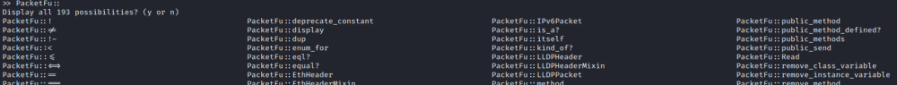
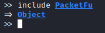
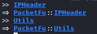
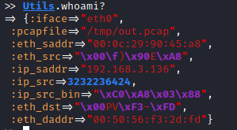

Usage
PacketFu Documentation: https://rubydoc.org/github/todb/packetfu/PacketFu
To learn PacketFu is suggested too use the interpreter (pry --simple-prompt) because it provides a lot of information which is hidden if you use a simple script. Once you become familiar with PacketFu and its architecture.
pry --simple-prompt
• require the ‘packetfu’ gem in order to load the PacketFu namespace (all the classes)

• include PacketFu in order to avoid writing the PacketFu namespace each time

Example: Utils instead of PacketFu::Utils
IPHeader
Utils
Utils

Utils Class
Utils can also be used for different tasks
• ARP request

• default network interface used by PacketFu

Common Packets classes
• ARPPacket → Constructs ARP packets
• EthPacket → Constructs Ethernet packets
• ICMPPacket → Constructs ICMP packets
• IPPacket → Constructs IP packets
• TCPPacket → Constructs TCP packets
• UDPPacket → Constructs UDP packets